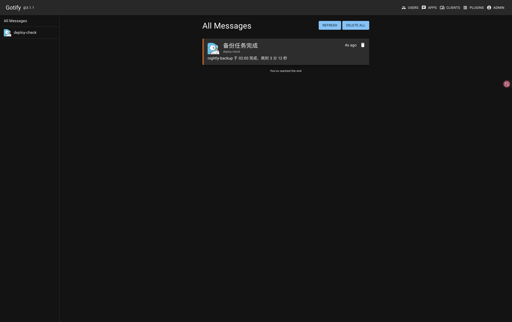

Deploying Gotify on Alibaba Cloud Compute Nest
About the service
Gotify is an MIT-licensed, self-hosted push notification server. It exposes a REST endpoint for sending messages, pushes them over WebSocket to a multi-user web console, and supports per-application tokens, message priorities and plugins. Scripts, monitoring, CI and IoT devices send notifications with an application token; the web console and the Android client receive them, and all data stays on your own server.
This Compute Nest service deploys a single ECS instance. The image already contains Gotify and its Docker Compose runtime, and both messages and accounts live in a local SQLite database on the instance.
Gotify is served on port 80 of the instance public IP. Opening the address shows the sign-in page; the username is always admin and the initial password is listed in the service instance outputs.
Billing
Creating a service from this template is free. Running a service instance incurs:
- ECS instance (minimum 2 vCPU, 4 GiB memory)
- System disk (fixed at 200 GiB ESSD by the template)
- Public bandwidth (fixed at 5 Mbps by the template)
Both pay-as-you-go and subscription are supported; the estimate is shown before you confirm the order.
Required RAM permissions
If you create the instance with a RAM user, grant the following policies first.
| Policy | Purpose |
|---|---|
| AliyunECSFullAccess | Manage ECS instances |
| AliyunVPCFullAccess | Manage VPC resources |
| AliyunROSFullAccess | Manage Resource Orchestration Service stacks |
| AliyunComputeNestUserFullAccess | Manage Compute Nest user-side resources |
Deployment steps
- Open the instance creation page, choose a region, and specify the instance type and instance password. You can create a new VPC or use an existing VPC and vSwitch.

-
Review the price estimate, choose Next: Confirm Order, accept the service agreement and click Create Now.
-
Wait for the deployment to finish. The Outputs section of the instance details page lists
gotify_80_url,AdminUsernameandAdminPassword, plus notes on message sending, security defaults, data persistence and single sign-on that are worth reading. -
Open the URL from the outputs (
http://<public-ip>), sign in asadminwith the generated password and reach the console.
First steps
Create an application and send your first message
Open APPS and click CREATE APPLICATION (for example nightly-backup) to get a push token for that application. Then run this from any machine that can reach the instance:
curl "http://<public-ip>/message?token=<app-token>" \
-H "Content-Type: application/json" \
-d '{"title":"Backup finished","message":"nightly-backup completed at 02:00 in 3m12s","priority":5}'
The token can also be sent in the X-Gotify-Key header. The console receives the message over WebSocket in real time.

Connect clients
The official Gotify Android client can be pointed at the instance URL plus an application token. The console supports multiple users, so you can add team accounts under USERS and keep the admin account separate.
Data persistence
All state lives in /opt/gotify/data on the system disk (the SQLite file gotify.db plus the images and plugins directories). docker compose down and container rebuilds keep the data; releasing the instance deletes it, so back up that directory regularly. In SQLite mode the upstream project caps the open connection count at 1, so write operations are serialized; watch disk headroom and write latency when message volume is high.
Change the admin password
GOTIFY_DEFAULTUSER_PASS only applies when the database is first created; editing it later or redeploying does not override an existing account. To change the password, sign in and use the user menu. To reset to a fresh account, run cd /opt/gotify && docker compose down on the instance, clear /opt/gotify/data, then docker compose up -d (all history is lost).
Security defaults
Public registration is disabled, local authentication stays on, server-side TLS is off and the session cookie is not marked Secure (required for plain HTTP delivery). The container runs unprivileged with capability dropping and no-new-privileges, and the host Docker socket is not mounted. To enable registration, edit /opt/gotify/.env and run cd /opt/gotify && docker compose up -d; exposing registration publicly lets any visitor create an account and is not recommended.
Enable OIDC single sign-on
OIDC support is built in (GOTIFY_OIDC_ENABLED, false by default) and works with providers such as Authelia, Dex and Keycloak. The provider must support PKCE and the callback address must end with /auth/oidc/callback. Once enabled, the IdP group claim takes over admin rights on every sign-in and overrides manual changes, so evaluate this before turning it on.
Parameters
| Parameter | Description | Default |
|---|---|---|
| VpcOption | Create a new VPC or reuse an existing one | NewVPC |
| VpcCidrBlock | CIDR block of the new VPC | 192.168.0.0/16 |
| VSwitchCidrBlock | CIDR block of the new vSwitch | 192.168.1.0/24 |
| EcsInstanceType | ECS instance type, 2–4 vCPU ecs.u1 / ecs.e families | none |
| InstancePassword | Password for the ECS instance | none |
| PayType | Billing method | PostPaid |
| ZoneId | Availability zone | none |
| VpcId / VSwitchId | Existing VPC and vSwitch (when reusing a VPC) | empty |
Outputs
| Output | Description |
|---|---|
| gotify_80_url | Gotify URL (port 80) |
| AdminUsername | Admin username (admin) |
| AdminPassword | Generated admin password |
| QuickStartGuide / PushMessageUsage | Sign-in and message sending notes |
| SecurityDefaultsNote / HttpDeliveryNote | Factory security defaults and plain HTTP limits |
| DataPersistenceNote / PasswordChangeNote | Data persistence and password change notes |
| SsoCapabilityNote | OIDC single sign-on notes |
Security notes
- The instance is delivered over plain HTTP on a public IP without a domain or TLS. If you put a TLS reverse proxy in front, also set
GOTIFY_SERVER_SECURECOOKIEto true and list the proxy inGOTIFY_SERVER_TRUSTEDPROXIES, otherwise the real client IP is lost; make sure WebSocket upgrades are not truncated. - An application token grants send rights for that application. Do not embed it in front-end code or public repositories.
- For an internet-facing push server, restrict source IPs where possible and review the USERS and APPS lists regularly.
- All data lives under
/opt/gotify/dataon the system disk and is deleted with the instance.
Troubleshooting
Sign-in says the username or password is wrong. The username is admin and the password is the AdminPassword output value (or the password you changed it to). A reused data directory keeps its old password.
curl returns 401 or 403. 401 means the application token is wrong or deleted; check it on the APPS page. 403 usually means the path is wrong: send to /message?token=<token> or use the X-Gotify-Key header.
No real-time messages in the console. WebSocket needs a direct connection to the instance; if a reverse proxy sits in between, make sure it allows the WebSocket upgrade.
Links
- Source code: https://github.com/gotify/server
- Documentation: https://gotify.net/docs
- License: MIT